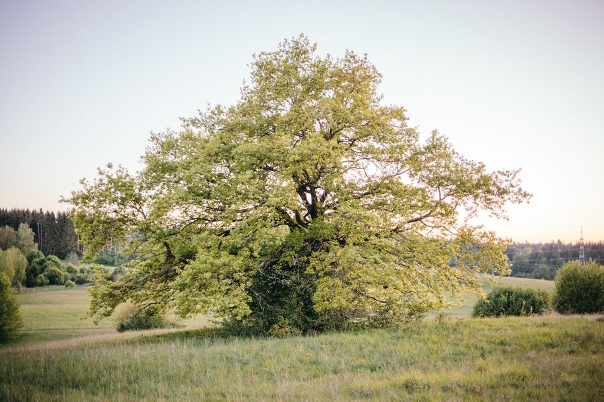

Mach dein Stück Land zur Oase der Vielfalt.
Gemeinsam verwandeln wir deinen Garten in einen lebendigen Ort — naturnah gestaltet mit heimischen Wildpflanzen, Stauden und Heilkräutern. Ein Stück Land, an dem Artenvielfalt wieder zuhause ist und das dich mit jedem Jahr tiefer mit der Landschaft verbindet.

“I keep repeating that land is alive.”
Mach deinen Traumgarten wahr
Bei einer naturnahen Gartenberatung schauen wir uns gemeinsam deinen Garten an — und du erfährst, wie du mit deinem Stück Land noch tiefer in Kontakt kommst. In dein Gestaltungskonzept fließen viele Ebenen ein:
- deine Wünsche und deine Intention für den Ort
- die Bedürfnisse der Lebewesen, die den Ort bewohnen
- der Wunsch der Landschaft — wohin sie sich entwickeln möchte
- die Atmosphäre und Qualität des Ortes
- die Aspekte naturnaher Gestaltung
Mein Schwerpunkt ist das Kreieren von Lebensräumen, die pure Lebendigkeit ausstrahlen und sich mit ihrer Artenvielfalt als Oasen der Fülle zur Verfügung stellen.

In drei Schritten zu deinem Naturgarten
Gemeinsam hinschauen
Wir schauen deinen Garten in Ruhe zusammen an und spüren, was dieser Ort — und du selbst — sich wünschen.
Konzept entwickeln
Ich entwickle ein Gesamtkonzept mit konkreten Bepflanzungsempfehlungen, abgestimmt auf Boden, Licht und deine Vision.
Pflanzen besorgen
Auf Wunsch übernehme ich für dich die Pflanzenbestellung, damit die richtigen heimischen Arten den Weg in deinen Garten finden.
Stimmen aus dem Garten
Heimische Stauden, Sträucher und Heilkräuter sorgen jetzt für mehr Artenvielfalt … es wird mehr sein als eine Gartenberatung.
Ich bin sehr glücklich, dass Frau Weidner die Pflege meines Naturgartens übernommen hat — immer wieder neue Ideen.
Erzähl mir von deinem Gartenprojekt
Ob kleiner Stadtgarten oder weites Grundstück — schreib mir, was dir vorschwebt. Wir finden gemeinsam heraus, wie dein Ort zur Oase der Vielfalt werden kann.